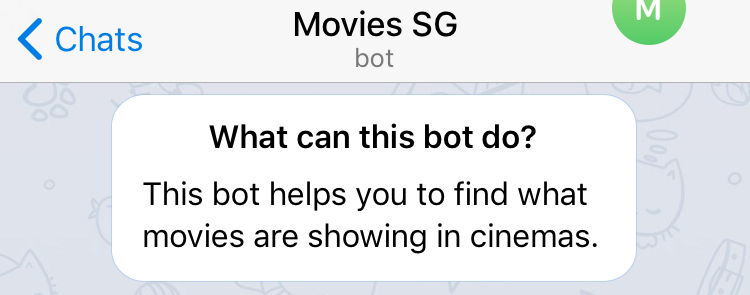
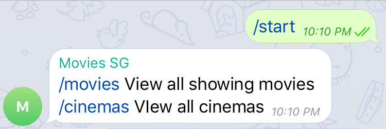
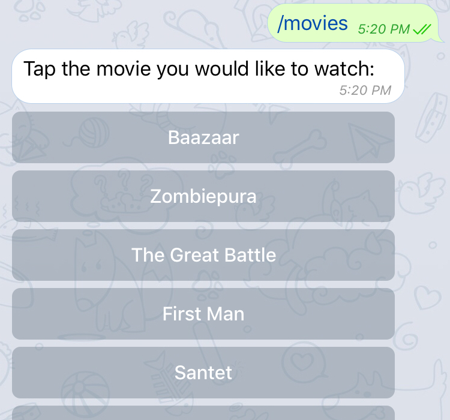
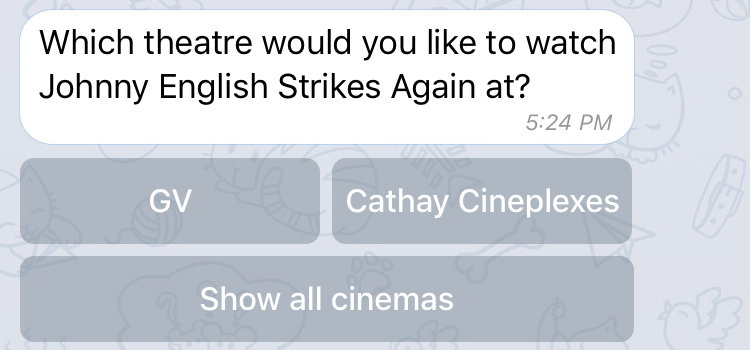
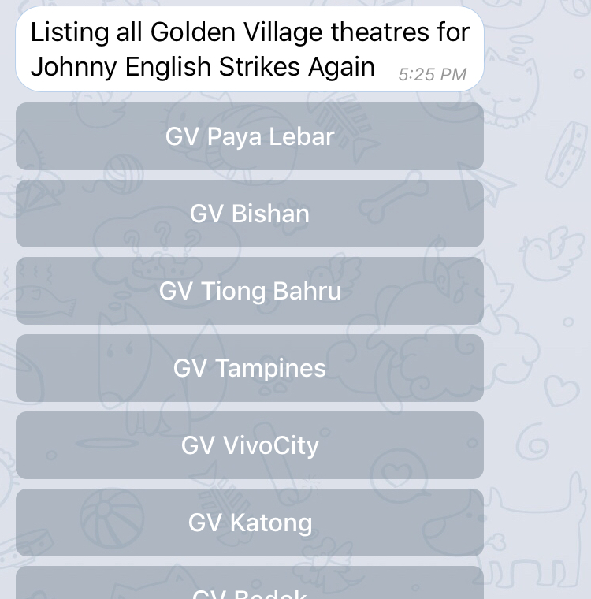
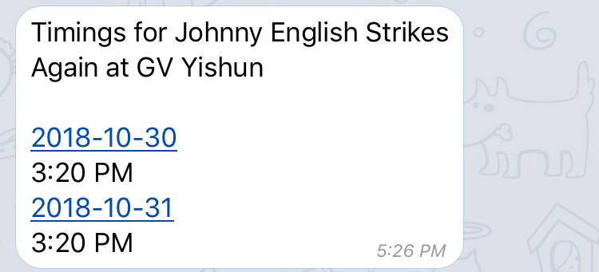
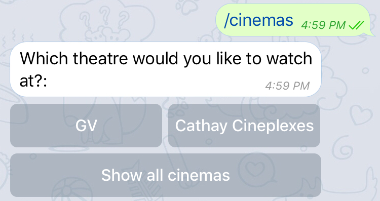
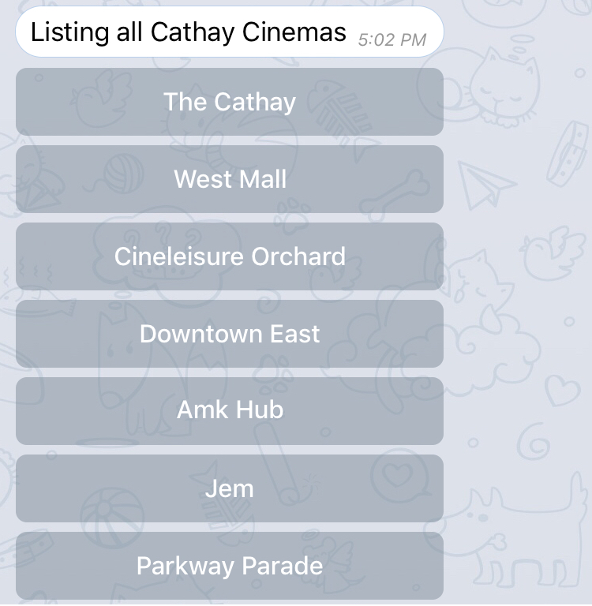
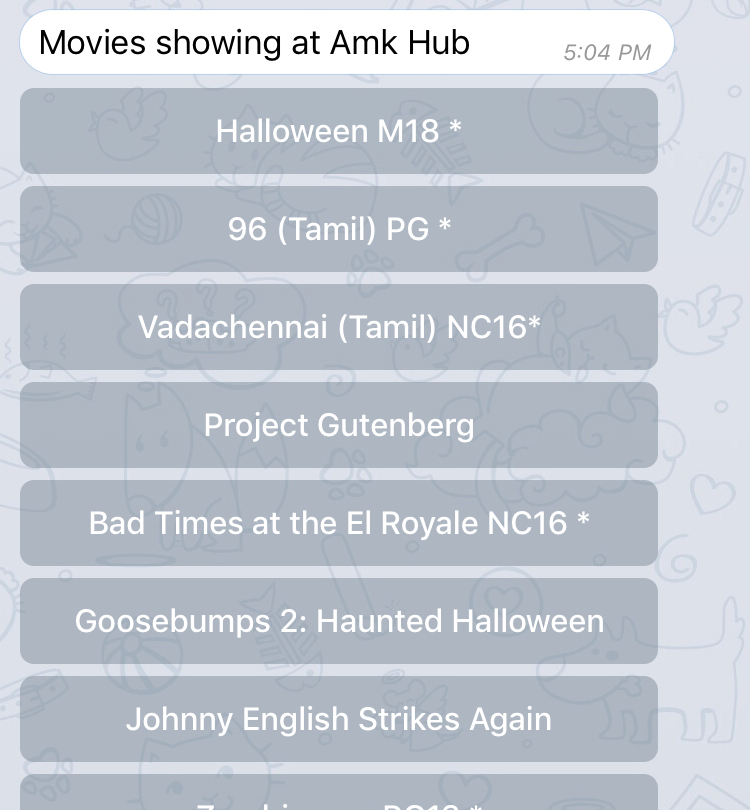
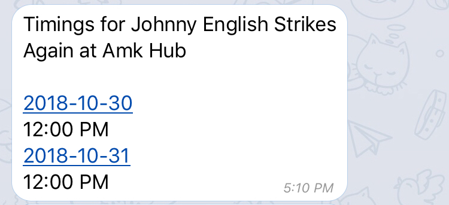

Planning which movie to watch using messaging apps is tedious. Deciding which movie to watch is easiest step. The difficult part is finding the right time and cinema to watch the movie at. Sometimes the location is too far, otherwise the timing isn’t good. Then the process of searching for another movie to watch starts again. Within all these steps, there is a constant need to keep on switching between apps, taking screenshots and sending it to the group chat.
With this in mind, I wanted to find an alternative method to reduce this tedious workflow.
I found out that Telegram allows developers to write their own bots. These bots can also be added into group chats. By using a bot, it will help reduce the pain point of switching between apps. Besides my friends seems like they prefer to use Telegram for messaging too and the conversation workflow can easily be transferred to other platforms.
To help me figure out what should the bot be able to do, I went around asking my friends for help. I asked them to walk me though their existing way of planning a movie with their friends. From the short interviews that I had with my friends, I managed to identify the relevant tasks.
View all showing movies
View all cinemas
Search for cinemas that are showing a particular movie
See what movies are available at a cinema
View the available timeslots for a movie at a particular cinema
Based on the tasks that I have discovered from my friends, I decided to create two commands. A command for tasks related to movies and another for tasks related to cinemas. For the conversation flow, I decided to use a linear hard coded system. Reasons for this is that processing natural language isn't that accurate and also beyond the scope of my project. Since the chatbot is command based, users might find it hard to remember the commands. To help reduce this workload, I would display inline buttons for the users to click where possible and also provide the user with helpful prompts of the available commands.
To start using the bot, the user would search for “MoviesSgBot” and select it. After selecting it, a short description informing the user of what the bot can do will be shown to the user.

Next, the user clicks on “/start” to initialize the conversation. Following the consistency interaction design principle, this step is like other telegram bots. The output for the “/start” command lists the available commands and a short description of what the command does. To make the command obvious, it is underlined and displayed in a different font color.

This command helps the users view what movies are currently showing. The movies are listed as inline buttons. Users can just click on it, reducing the need for typing.

After selecting a movie, the user will be prompted to select the company. During the interview with my friends, I realised that some of them preferred to watch at a certain company's cinemas, hence I decided to add in this filter.

The user will be presented with the list of cinemas based on his previous choice. Only cinemas that are showing the movie will be included in the list.

Upon clicking on the cinema, the timings will be shown to the user.

This command helps the users view the cinemas available and also see what movies are showing at a particular cinema. As mentioned previously this company filter helps users to narrow down the list of cinemas, reducing the amount of scrolling needed.

In this example, I have selected Cathay as the company.

Movies available at the cinema will be shown to the user.

Lastly, the timings will be shown to the user.
